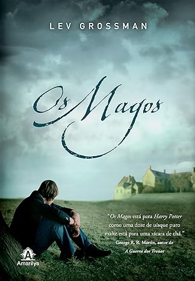
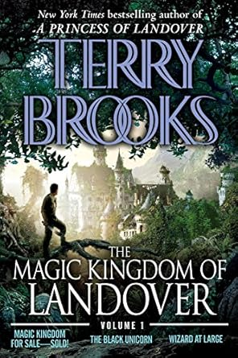
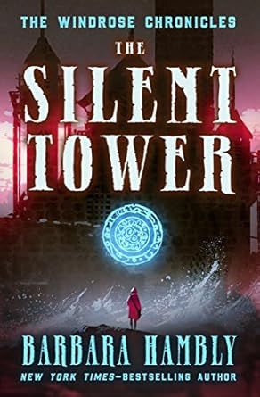

A Trilogia dos Magos de Lev Grossman

Quentin Coldwater descobre um colégio secreto de magia chamado Brakebills, onde sua vida muda para sempre. Em vez de Princeton, ele estuda magia moderna e enfrenta desafios inesperados que transformam sua visão de mundo.
Reino Mágico de Landover de Terry Brooks

Ben Holiday compra um reino mágico chamado Landover, apenas para descobrir que ele está em ruínas e cheio de problemas. Ele deve restaurar o reino, enfrentando dragões, uma bruxa malvada e barões rebeldes que não aceitam sua autoridade.
As Crônicas de Windrose de Barbara Hambly
